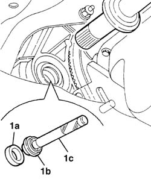
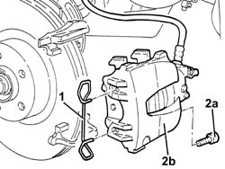
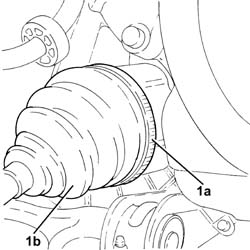
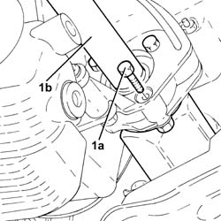
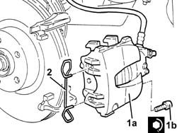

2110D63 rh differential shaft oil seal - r r
- Path
- Procedures > 21 GEARBOX > 2110 MANUAL GEARBOX AND DIFFERENTIAL > 2110D manual gearbox differential > 2110D63 rh differential shaft oil seal - r r
- Kind
- repair procedure (removal / refitting; the operation number is the code)
- Applies to
- engines: 1.6 TS , 1.8 TS, 2.0 JTS, 2.5 V6, 1.9 JTD 8v , 1.9 JTD 16v, 2.0 JTS, 2.4 JTD 10v, 2.4 JTD 20v; all production periods
- Interactive page
- https://sloeber94.github.io/elrnDB-a156/en/#/3237931
Applies to: engines: 1.6 TS , 1.8 TS, 2.0 JTS, 2.0 JTS; all production periods
 Removing
Removing
 Refitting
Refitting2710A31 intermediate drive shaft - r r
Extract and remove oil seal from differential right flange.
Applies to: engines: 1.6 TS , 1.8 TS, 2.0 JTS, 2.0 JTS; all production periods
Refitting
Removing1. Mount the new oil seal (1a) on differential right flange by means of tools (1b) and (1c).
 | Name | Country |
|---|---|---|
- | Fitting tool | 1.821.170.000 |
| Name | Country |
|---|---|---|
1c | Grip | 1.821.171.000 |

Applies to: engines: 1.6 TS , 1.8 TS, 2.0 JTS, 2.0 JTS; all production periods
Applies to: engines: 2.5 V6, 1.9 JTD 8v , 2.4 JTD 10v; all production periods
Removing
Refitting4410A80 damper lower fork - r r
4450B10 Front WHEEL (one) - R.R.
4410A80 damper lower fork - r r
4410A80 damper lower fork - r r
4410A80 damper lower fork - r r
2110D54 r/h flange on differential - r + r with intermediate drive shaft removed
2110D62 rh differential shaft oil seal - r r with intermediate drive shaft removed
Applies to: engines: 2.5 V6, 1.9 JTD 8v , 2.4 JTD 10v; all production periods
Refitting
Removing2110D62 rh differential shaft oil seal - r r with intermediate drive shaft removed
4410A80 damper lower fork - r r
1076B50 exhaust pipe attachment to engine - r + r
2710A30 intermediate drive shaft - r + r with r/h drive shaft removed
4410A80 damper lower fork - r r
Applies to: engines: 1.9 JTD 16v; all production periods
Removing
RefittingProceed with removal 4410A80 damper lower fork - r r .
Proceed with removal 4450B10 Front WHEEL (one) - R.R. .
Proceed with removal 7055B64 Engine compartment DUST shield in front wheel arch (one), left or right - R.R. .
Proceed with removal 2710A10 drive shaft with joints (one), l/h or r/h - r + r .
Proceed with removal 2710A30 intermediate drive shaft - r + r with r/h drive shaft removed .
Proceed with removal 2710A31 intermediate drive shaft - r r .
Proceed with removal 2110D54 r/h flange on differential - r + r with intermediate drive shaft removed .
Proceed with removal 2110D62 rh differential shaft oil seal - r r with intermediate drive shaft removed .
Applies to: engines: 1.9 JTD 16v; all production periods
Refitting
RemovingProceed with refitting 2110D62 rh differential shaft oil seal - r r with intermediate drive shaft removed .
Proceed with refitting 2110D54 r/h flange on differential - r + r with intermediate drive shaft removed .
Proceed with refitting 2710A31 intermediate drive shaft - r r .
Proceed with refitting 2710A30 intermediate drive shaft - r + r with r/h drive shaft removed .
Proceed with refitting 2710A10 drive shaft with joints (one), l/h or r/h - r + r .
Proceed with refitting 7055B64 Engine compartment DUST shield in front wheel arch (one), left or right - R.R. .
Proceed with refitting 4450B10 Front WHEEL (one) - R.R. .
Proceed with refitting 4410A80 damper lower fork - r r .
Applies to: engines: 2.4 JTD 20v; all production periods
Removing
RefittingPosition the vehicle on the ramp
Proceed with removal 7055B54 under-engine guard - r r .
Proceed with removal 1076B70 exhaust pipe between pre-catalytic converter and catalytic converter - r r .
Proceed with removal 1008A44 rear rigid mount - r r .
Proceed with removal 4450B04 right front wheel r r .
Proceed with removal - 7055B66 Engine compartment DUST SHIELD protection in right front wheel arch - R.R. .
Proceed with removal - 7055B91 Right front WHEEL ARCH LINER - R.R. .
Proceed with the removal 4410A80 damper lower fork - r r (Right side).
1. Remove the clip fastening the right front brake caliper to the bracket.
2. Undo the bolts (2a) and move the right front brake caliper (2b) sideways and secure it.

Applies to: engines: 2.4 JTD 20v; all production periods
1. Loosen the band (1a) and disconnect the right driveshaft (1b) from the intermediate driveshaft.

Applies to: engines: 2.4 JTD 20v; all production periods
1. Undo the bolts (1a) and remove the intermediate drive shaft (1b).

Applies to: engines: 2.4 JTD 20v; all production periods
Proceed with removal 2110D62 rh differential shaft oil seal - r r with intermediate drive shaft removed .
Applies to: engines: 2.4 JTD 20v; all production periods
Refitting
RemovingProceed with refitting 2110D62 rh differential shaft oil seal - r r with intermediate drive shaft removed .
Place the intermediate driveshaft in its housing and secure it using the bolts.
Connect the right driveshaft to the intermediate driveshaft and tighten the band.
1. Place the right front brake caliper (1a) back in its housing and tighten the bolts (1b) to the recommended torque.
 | Fastening | Component | Ø | Value (daNm) |
|---|---|---|---|---|
1b | - | - | - | - |
2. Place the clip fastening the right front brake caliper to the bracket back in its housing.

Applies to: engines: 2.4 JTD 20v; all production periods
Proceed with the refitting 4410A80 damper lower fork - r r (Right side).
Proceed with refitting - 7055B91 Right front WHEEL ARCH LINER - R.R. .
Proceed with refitting - 7055B66 Engine compartment DUST SHIELD protection in right front wheel arch - R.R. .
Proceed with refitting 4450B04 right front wheel r r .
Proceed with refitting 1008A44 rear rigid mount - r r .
Proceed with refitting 1076B70 exhaust pipe between pre-catalytic converter and catalytic converter - r r .
Refill the manual gearbox and differential with fluid - 0010T41 MANUAL GEARBOX OIL - Check level and top up, if necessary .
Proceed with refitting 7055B54 under-engine guard - r r .
Remove the car from the ramps.
Topics linked from this page (13)
- 1008A44 rear rigid mount - r r
- 1076B50 exhaust pipe attachment to engine - r + r
- 1076B70 exhaust pipe between pre-catalytic converter and catalytic converter - r r
- 2110D54 r/h flange on differential - r + r with intermediate drive shaft removed
- 2110D62 rh differential shaft oil seal - r r with intermediate drive shaft removed
- 2710A10 drive shaft with joints (one), l/h or r/h - r + r
- 2710A30 intermediate drive shaft - r + r with r/h drive shaft removed
- 2710A31 intermediate drive shaft - r r
- 4410A80 damper lower fork - r r
- 4450B04 right front wheel r r
- 4450B10 Front WHEEL (one) - R.R.
- 7055B54 under-engine guard - r r
- 7055B64 Engine compartment DUST shield in front wheel arch (one), left or right - R.R.